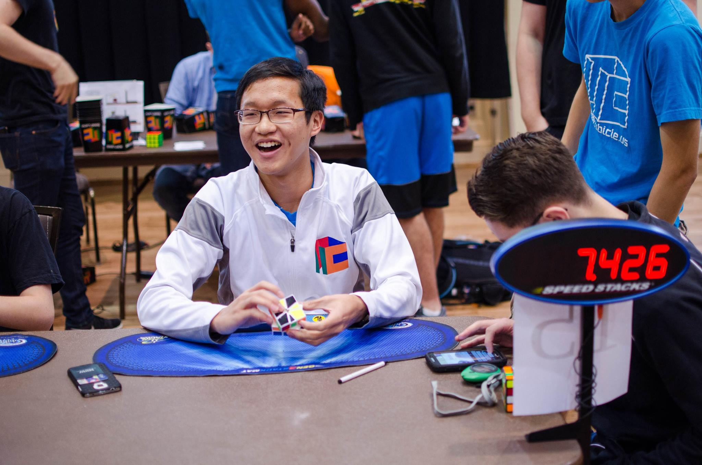

		<div class="text">
			<div class="container">
				<h1>About Me</h1><hr>
				
				<p>Hey there! I'm Brandon Lin, a speedcuber originally from New York City. I currently attend school at the University of Pennsylvania in Philadelphia, Pennsylvania.</p>
				<p>I have been cubing since 2010, when I decided one day to learn how to solve the Rubik's Cube. There is no doubt that this initial spark in wanting to learn to speedcube has allowed me to go further and further into speedcubing.</p>
				<p>Currently I hold the World Record for the fastest average time to solve a <a href="https://en.wikipedia.org/wiki/Square_One_(puzzle)">Square-1</a>. A video of my average can be found <a href="https://www.youtube.com/watch?v=ABNNLXlQX2s">here</a>.</p>
				<p>Some of my other favorite events include Megaminx, 3x3 Blindfolded, and 3x3 One-Handed.</p>
			</div>
		</div>